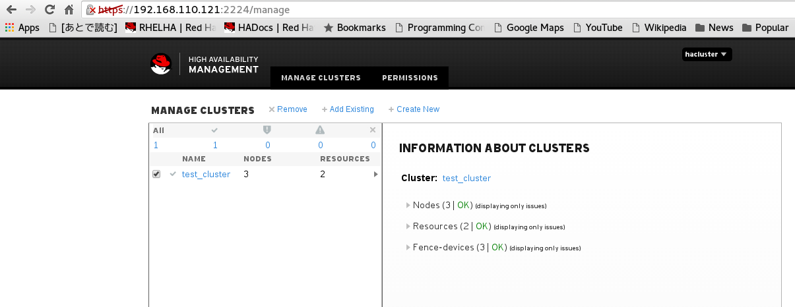
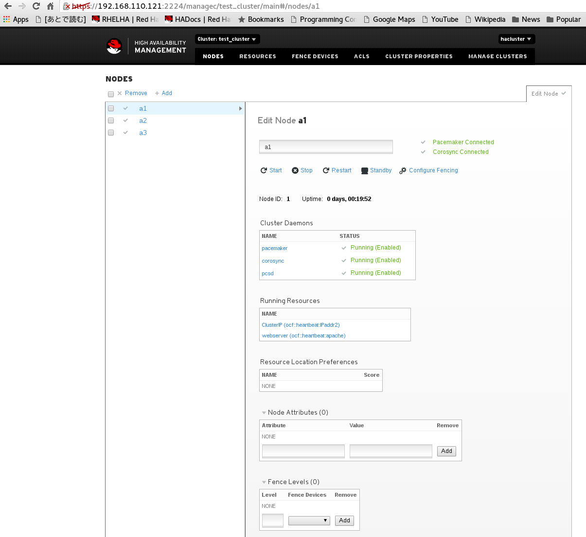
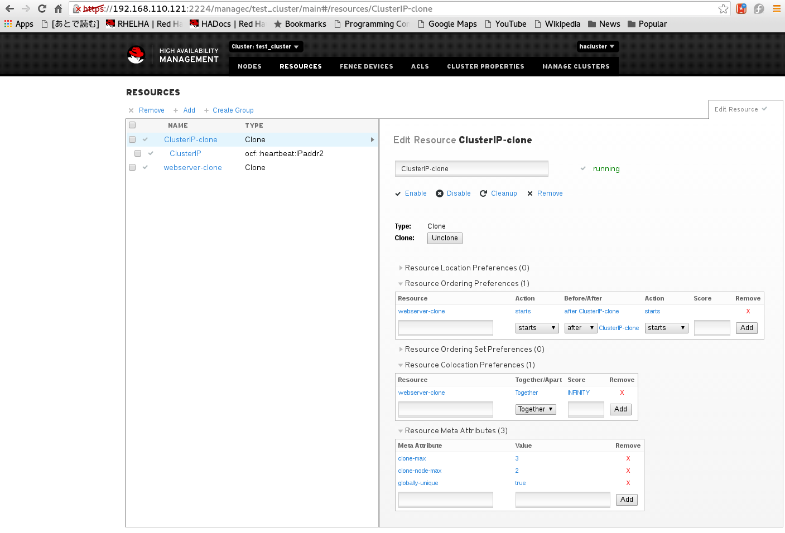

2. PCSD Web UI¶
pcsd Web UIは、pcsdが起動しているノードの2224番ポートにブラウザでアクセスすることができます。 認証画面では、hacluster/password でログインすることができます。
https://nodename:2224
Web UIでできることは、下記記事に詳しく書かれています。
https://access.redhat.com/documentation/ja-JP/Red_Hat_Enterprise_Linux/7/html/High_Availability_Add-On_Reference/ch-pcsd-HAAR.html
下記に、サンプル画面を幾つか掲載します。
  